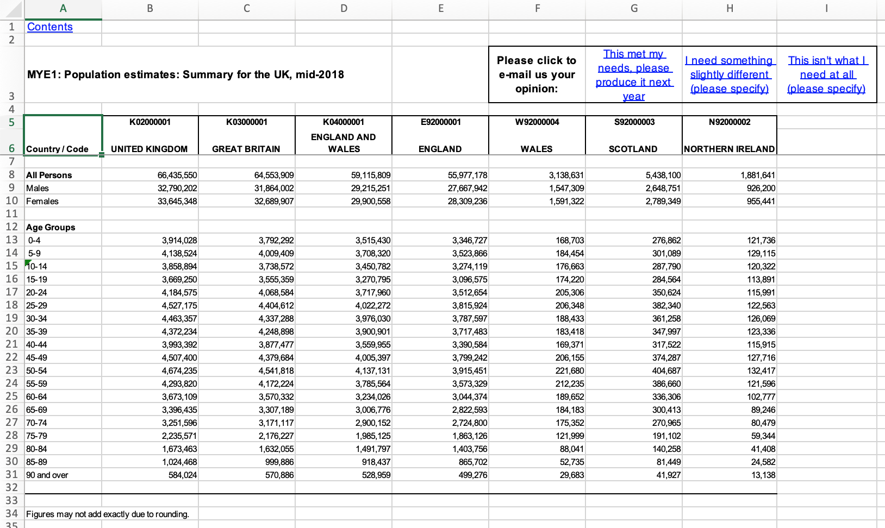

# download the data file
download.file(
url = "https://www.ons.gov.uk/file?uri=/peoplepopulationandcommunity/populationandmigration/populationestimates/datasets/populationestimatesforukenglandandwalesscotlandandnorthernireland/mid20182019laboundaries/ukmidyearestimates20182019ladcodes.xls",
destfile = "ons_pop_data.xls"
)Tutorial: Cleaning UK Office for National Statistics data in R
UK Office for National Statistics data can be in formats that are hard to analyse. This tutorial works through how to clean ONS data tables.
TL; DR: skip to the complete script
The UK Office for National Statistics (ONS) publishes a lot of quantitative information on all the topics you’d expect from a national statistical office, but most of it is released in formats that need manual cleaning before they can be used for data analysis.
ONS has started publishing some machine-readable data1, but most products its produces are Excel tables that are optimised for human reading by mimicking the format of tables in the printed statistical reports that ONS produced for decades.
This tutorial talks through how to clean a human-readable table produced by ONS using the tidyverse collection of packages, so the resulting tidy data can be used for analysis. As an example, we’ll use a file containing population estimates for each nation within the United Kingdom by five-year age groups.
Why do this?
It might be tempting not to clean the data in R but instead simply open the relevant file in Excel and make the necessary changes there. This will work, but there are at least three reasons why cleaning the data in Excel is not necessarily a good idea.
- It’s harder to repeat the process. For example, if ONS updates the table (either because new data is available or to correct a problem) then you have to repeat the manual process in Excel. If you clean the data in R, typically all you have to do is run the script again.
- It’s harder to find mistakes. If you make a mistake while changing data in Excel but don’t notice until later (e.g. if your results don’t make sense) it will be difficult to track down exactly what happened. If you use a script to clean the data, you can go back and run it line-by-line to identify the problem.
- It’s harder for others to trust your work. If someone else wants to check your analysis (e.g. before taking action based on it), that’s more difficult if you have manipulated the data manually in ways the other person cannot see.
Before you start
This tutorial assumes you have R installed and that you’re comfortable with the basics of using R to manipulate data. If you don’t have the tidyverse collection of packages installed already, run install.packages("tidyverse") before continuing. It also a good idea to run this code from inside a project.
Download the data
Although ONS is relatively good at providing archive data, it’s good practice to always save an unamended copy of the raw data for any project just in case it later disappears from the source website.
Load the data into R
Since the data are in an Excel file, we can use the readxl package to read it into R2. ONS publishes data using a mixture of file formats, including both the pre-2007 Excel .xls file format and the current .xlsx format3. The read_excel() function can handle both .xls and .xlsx files, but can only load a single sheet from within an Excel workbook (i.e. file). We can use the excel_sheets() function to get the names of each sheet in the Excel file.
library("readxl")
library("tidyverse")── Attaching core tidyverse packages ──────────────────────── tidyverse 2.0.0 ──
✔ dplyr 1.1.4 ✔ readr 2.1.5
✔ forcats 1.0.0 ✔ stringr 1.5.1
✔ ggplot2 3.5.1 ✔ tibble 3.2.1
✔ lubridate 1.9.4 ✔ tidyr 1.3.1
✔ purrr 1.0.4
── Conflicts ────────────────────────────────────────── tidyverse_conflicts() ──
✖ dplyr::filter() masks stats::filter()
✖ dplyr::lag() masks stats::lag()
ℹ Use the conflicted package (<http://conflicted.r-lib.org/>) to force all conflicts to become errorsexcel_sheets("ons_pop_data.xls") [1] "Contents " "Terms and conditions "
[3] "Notes and definitions" "Admin. geography hierarchy"
[5] "MYE1" "MYE2-All"
[7] "MYE2 - Males" "MYE2 - Females"
[9] "MYE3" "MYE4 "
[11] "MYE 5" "MYE 6"
[13] "Related publications" Note that some of the sheets have a space at the end of the name, which will be invisible when viewing the file in Excel but which we need to know about to specify the sheet name for read_excel().
The Contents sheet contains a short description of the data in each of the other sheets. There are blank rows between every row in this table (an example of how ONS optimises for human rather than computer readability), but we can remove these rows using the drop_na() function from the tidyr package.
drop_na(read_excel("ons_pop_data.xls", sheet = "Contents "))# A tibble: 12 × 2
Contents Population Estimates for UK, England and Wales, …¹
<chr> <chr>
1 Terms and conditions Terms and conditions
2 Notes and definitions Notes and definitions
3 Admin. geography hierarchy Administrative geography hierarchy for the United…
4 MYE1 Population estimates: Summary for the UK, mid-2018
5 MYE2 - All Population estimates: Persons by single year of a…
6 MYE2 - M Population estimates: Males by single year of age…
7 MYE2 - F Population estimates: Females by single year of a…
8 MYE3 Components of population change for local authori…
9 MYE4 Population estimates: Summary for the UK, mid-197…
10 MYE5 Population estimates: Population density for loca…
11 MYE6 Median age of population for local authorities in…
12 Related publications Provides links to further population statistics &…
# ℹ abbreviated name:
# ¹`Population Estimates for UK, England and Wales, Scotland and Northern Ireland: Mid-2018, using April 2019 local authority district codes`We’re going to use the data from the mid-2018 UK population summary, so we want the MYE1 sheet. We can now use read_excel() to load the data.
file_data <- read_excel("ons_pop_data.xls", sheet = "MYE1")New names:
• `` -> `...2`
• `` -> `...3`
• `` -> `...4`
• `` -> `...5`
• `` -> `...6`
• `` -> `...7`
• `` -> `...8`
• `` -> `...9`Clean the data
In Excel, the MYE1 sheet looks like this:

The file_data object contains the result of the read_excel() function’s attempt to load this sheet into R:
file_data# A tibble: 33 × 9
Contents ...2 ...3 ...4 ...5 ...6 ...7 ...8 ...9
<chr> <chr> <chr> <chr> <chr> <chr> <chr> <chr> <chr>
1 <NA> <NA> <NA> <NA> <NA> <NA> <NA> <NA> <NA>
2 MYE1: Population estimates: … <NA> <NA> <NA> <NA> "Ple… This… I ne… "Thi…
3 <NA> <NA> <NA> <NA> <NA> <NA> <NA> <NA> <NA>
4 Country / Code K020… K030… K040… E920… "W92… S920… N920… <NA>
5 <NA> UNIT… GREA… ENGL… ENGL… "WAL… SCOT… NORT… <NA>
6 <NA> <NA> <NA> <NA> <NA> <NA> <NA> <NA> <NA>
7 All Persons 6643… 6455… 5911… 5597… "313… 5438… 1881… <NA>
8 Males 3279… 3186… 2921… 2766… "154… 2648… 9262… <NA>
9 Females 3364… 3268… 2990… 2830… "159… 2789… 9554… <NA>
10 <NA> <NA> <NA> <NA> <NA> <NA> <NA> <NA> <NA>
# ℹ 23 more rowsThis isn’t very useful. There are several problems we need to fix:
- the column names don’t reflect the data in each column,
- all the columns have the type
<chr>(character) even when the columns contain numbers, - there are several blank or partially blank rows,
- the feedback questionnaire in the top-left corner of the sheet means
file_datacontains an extra column, - there is a row containing a footnote,
- the data are in wide rather than long format.
We can fix all of these either using the parameters of read_excel() or
functions from the tidyverse packages.
We can exclude all the cells in the sheet except those containing data with the range = parameter of read_excel(). We can either specify the cell range manually (e.g. range = "A5:H31") or we can use one of the cell_* collection of helper functions from the cellranger package, which is loaded with readxl.
We can work out which cells we want to retain either by opening the file in Excel and noting which rows contain the data, or by running View(file_data) in R and then adjusting the value of range = in read_excel() until we are happy with the result.
file_data <- read_excel("ons_pop_data.xls",
sheet = "MYE1",
range = cell_rows(5:31)
)
file_data# A tibble: 26 × 8
`Country / Code` K02000001 K03000001 K04000001 E92000001 W92000004 S92000003
<chr> <chr> <chr> <chr> <chr> <chr> <chr>
1 <NA> UNITED KI… GREAT BR… ENGLAND … ENGLAND WALES SCOTLAND
2 <NA> <NA> <NA> <NA> <NA> <NA> <NA>
3 All Persons 66435550 64553909 59115809 55977178 3138631 5438100
4 Males 32790202 31864002 29215251 27667942 1547309 2648751
5 Females 33645348 32689907 29900558 28309236 1591322 2789349
6 <NA> <NA> <NA> <NA> <NA> <NA> <NA>
7 Age Groups <NA> <NA> <NA> <NA> <NA> <NA>
8 0-4 3914028 3792292 3515430 3346727 168703 276862
9 5-9 4138524 4009409 3708320 3523866 184454 301089
10 10-14 3858894 3738572 3450782 3274119 176663 287790
# ℹ 16 more rows
# ℹ 1 more variable: N92000002 <chr>This deals with the unwanted rows above and below the table, as well as the unwanted columns produced because of the feedback questionnaire.
The next problem is that the column names represent the GSS statistical codes for the different nations of the UK, rather than the names of the nations. You may prefer the codes, but we’ll assume that you want the names.
We can use functions from the magrittr package to work with individual values in the data. All these functions are aliases for base R functions, but can be easier to work with.
library("magrittr")
# set a value for the first row in the first column, which is currently blank
file_data[1, 1] <- "group"
# replace the existing column names with the values from the first row
file_data <- set_colnames(file_data, file_data[1, ])
# remove the first row, which we no longer need, using slice() from dplyr
file_data <- slice(file_data, 2:n())
file_data# A tibble: 25 × 8
group `UNITED KINGDOM` `GREAT BRITAIN` `ENGLAND AND WALES` ENGLAND WALES
<chr> <chr> <chr> <chr> <chr> <chr>
1 <NA> <NA> <NA> <NA> <NA> <NA>
2 All Perso… 66435550 64553909 59115809 559771… 3138…
3 Males 32790202 31864002 29215251 276679… 1547…
4 Females 33645348 32689907 29900558 283092… 1591…
5 <NA> <NA> <NA> <NA> <NA> <NA>
6 Age Groups <NA> <NA> <NA> <NA> <NA>
7 0-4 3914028 3792292 3515430 3346727 1687…
8 5-9 4138524 4009409 3708320 3523866 1844…
9 10-14 3858894 3738572 3450782 3274119 1766…
10 15-19 3669250 3555359 3270795 3096575 1742…
# ℹ 15 more rows
# ℹ 2 more variables: SCOTLAND <chr>, `NORTHERN IRELAND` <chr>Next we remove any rows containing empty cells, since none of the data rows contain empty cells (see Tips, below, for tables where this isn’t the case).
file_data <- drop_na(file_data)
file_data# A tibble: 22 × 8
group `UNITED KINGDOM` `GREAT BRITAIN` `ENGLAND AND WALES` ENGLAND WALES
<chr> <chr> <chr> <chr> <chr> <chr>
1 All Perso… 66435550 64553909 59115809 559771… 3138…
2 Males 32790202 31864002 29215251 276679… 1547…
3 Females 33645348 32689907 29900558 283092… 1591…
4 0-4 3914028 3792292 3515430 3346727 1687…
5 5-9 4138524 4009409 3708320 3523866 1844…
6 10-14 3858894 3738572 3450782 3274119 1766…
7 15-19 3669250 3555359 3270795 3096575 1742…
8 20-24 4184575 4068584 3717960 3512654 2053…
9 25-29 4527175 4404612 4022272 3815924 2063…
10 30-34 4463357 4337288 3976030 3787597 1884…
# ℹ 12 more rows
# ℹ 2 more variables: SCOTLAND <chr>, `NORTHERN IRELAND` <chr>We can convert the data from wide to long using gather() from the tidyr package. gather() can be a slightly confusing function to use, but there are some useful tutorials available by Garrett Grolemund, UC Business Analytics and R for Data Science.
file_data <- gather(file_data, key = "geography", value = "population", -group)
file_data# A tibble: 154 × 3
group geography population
<chr> <chr> <chr>
1 All Persons UNITED KINGDOM 66435550
2 Males UNITED KINGDOM 32790202
3 Females UNITED KINGDOM 33645348
4 0-4 UNITED KINGDOM 3914028
5 5-9 UNITED KINGDOM 4138524
6 10-14 UNITED KINGDOM 3858894
7 15-19 UNITED KINGDOM 3669250
8 20-24 UNITED KINGDOM 4184575
9 25-29 UNITED KINGDOM 4527175
10 30-34 UNITED KINGDOM 4463357
# ℹ 144 more rowsFinally, we will neaten the data by converting the population variable to numeric and the geography variable to title case (using a function from the stringr package).
tidy_data <- mutate(
file_data,
geography = str_to_title(geography),
population = as.numeric(population)
)
tidy_data# A tibble: 154 × 3
group geography population
<chr> <chr> <dbl>
1 All Persons United Kingdom 66435550
2 Males United Kingdom 32790202
3 Females United Kingdom 33645348
4 0-4 United Kingdom 3914028
5 5-9 United Kingdom 4138524
6 10-14 United Kingdom 3858894
7 15-19 United Kingdom 3669250
8 20-24 United Kingdom 4184575
9 25-29 United Kingdom 4527175
10 30-34 United Kingdom 4463357
# ℹ 144 more rowsA complete script
Using the magrittr pipe %>%, we can combine all these cleaning steps together, which makes the code more compact and (arguably) more readable.
library("lubridate") # lubridate and magrittr are part of the
library("magrittr") # tidyverse but not loaded with it by default
library("readxl")
library("tidyverse")
tidy_data <- read_excel("ons_pop_data.xls",
sheet = "MYE1",
range = cell_rows(5:31)
) %>%
inset(1, 1, "group") %>%
set_colnames(.[1, ]) %>%
slice(2:n()) %>%
drop_na() %>%
gather(key = "geography", value = "population", -group) %>%
mutate(
geography = str_to_title(geography),
population = as.numeric(population)
)
Tips for other ONS tables
There is a huge number of ONS tables available, some having different formatting issues from those mentioned above. These are some of the issues I’ve come across and potential ways to deal with them.
(The examples below all assume your data is in a data frame/tibble called data.)
Missing values in the data
Many ONS datasets have missing values, and some even have multiple values representing different reasons for the values being missing. For example, data for small geographic areas might be missing because the data could not be collected for a particular location or have been redacted to prevent disclosure of personal information.
The na = parameter of read_excel() can be used to specify values in the data that should be treated as missing. For example, if an ONS table uses a blank cell to represent data that could not be collected and ** to represent redacted data, read_excel("data.xlsx", sheet = "Sheet 1", na = c("", "**")) will ensure both values are represented by NA in R.
It isn’t possible to use drop_na() to remove empty rows if there are missing values in the data, because drop_na() removes rows that contain any missing values. Instead, you can use remove_empty() from the janitor package to remove rows or columns that are entirely empty. If there are rows that you want to remove from the data that contain some missing values and some values that are not missing, use filter() from dplyr based on the value of a specific column. For example, to remove rows with the value of population missing, use filter(data, !is.na(population)). To remove single rows manually by row number, use slice(), also from dplyr.
Multiple tables in a single sheet
Sometimes multiple related data tables are placed on a single Excel sheet. You can either import them separately and then combine the resulting datasets manually (e.g. with rbind()) or just treat the rows or columns between each table as clutter that can be removed using a combination of drop_na() and slice() as above. In the latter case, modify the range = argument of read_excel() so that the selected cells/rows/columns include all the tables.
Category names or values with footnote markers
If tables have multiple footnotes, some categories or values may end in a footnote marker (typically a number). To remove these, use str_remove() from stringr. For example, if the column place contains values with footnote markers, you can use mutate(data, place = str_remove(place, "\\d+$")) to remove them, where \\d+ is a regular expression that matches one or more numeric characters and $ matches only numeric characters at the end of the value of place. This only works for non-numeric values with numeric footnote markers, since the regular expression \\d+$ will match any sequence of numbers at the end of a cell.
Dates and date ranges stored as text
Since many ONS statistics are published for financial years, time periods are often stored as strings showing, for example, 2018-19. Converting these to dates helps with things like plotting values on an axis with date values or using the data in a time-series model.
The lubridate package is very useful for converting dates. You can either represent each date as a specific moment in time, or as an interval in time. For example, if a financial year is stored as 2018-19 in the year column, you can extract the specific moment the year started using mutate(year_beginning = ymd(paste(str_sub(year, 0, 4)), "04", "01")). In this code, str_sub(year, 0, 4) extracts the first four characters from the string 2018-19, paste() creates a single character value for 1 April in the given year (e.g. 2018 04 01) and ymd() converts that string into a date object.
To store a date as an interval, we extract both the date on which the year started and the date it ended. For example,
mutate(
data,
year_interval = interval(
ymd(paste(str_sub(year, 0, 4), "04", "01")),
ymd(paste(str_sub(year, -2), "03", "31"))
)
)R session information
The code in this tutorial was run in R with the following configuration:
R version 4.4.2 (2024-10-31)
Platform: aarch64-apple-darwin20
Running under: macOS Sequoia 15.4.1
Matrix products: default
BLAS: /Library/Frameworks/R.framework/Versions/4.4-arm64/Resources/lib/libRblas.0.dylib
LAPACK: /Library/Frameworks/R.framework/Versions/4.4-arm64/Resources/lib/libRlapack.dylib; LAPACK version 3.12.0
locale:
[1] en_US.UTF-8/en_US.UTF-8/en_US.UTF-8/C/en_US.UTF-8/en_US.UTF-8
time zone: Europe/London
tzcode source: internal
attached base packages:
[1] stats graphics grDevices utils datasets methods base
other attached packages:
[1] magrittr_2.0.3 lubridate_1.9.4 forcats_1.0.0 stringr_1.5.1
[5] dplyr_1.1.4 purrr_1.0.4 readr_2.1.5 tidyr_1.3.1
[9] tibble_3.2.1 ggplot2_3.5.1 tidyverse_2.0.0 readxl_1.4.3
loaded via a namespace (and not attached):
[1] gtable_0.3.6 jsonlite_2.0.0 compiler_4.4.2 tidyselect_1.2.1
[5] scales_1.3.0 yaml_2.3.10 fastmap_1.2.0 R6_2.6.1
[9] generics_0.1.3 knitr_1.49 htmlwidgets_1.6.4 munsell_0.5.1
[13] pillar_1.10.1 tzdb_0.5.0 rlang_1.1.5 utf8_1.2.4
[17] stringi_1.8.7 xfun_0.51 timechange_0.3.0 cli_3.6.4
[21] withr_3.0.2 digest_0.6.37 grid_4.4.2 rstudioapi_0.17.1
[25] hms_1.1.3 lifecycle_1.0.4 vctrs_0.6.5 evaluate_1.0.3
[29] glue_1.8.0 cellranger_1.1.0 colorspace_2.1-1 rmarkdown_2.29
[33] tools_4.4.2 pkgconfig_2.0.3 htmltools_0.5.8.1Footnotes
ONS refers to this as ‘open data’, although (almost) all the products it produces are already open licensed under the Open Government Licence↩︎
The
readxlpackage is installed as part of the tidyverse but is not automatically loaded bylibrary("tidyverse").↩︎I have not been able to work out why some ONS files are in
.xlsformat and some in.xlsx.↩︎